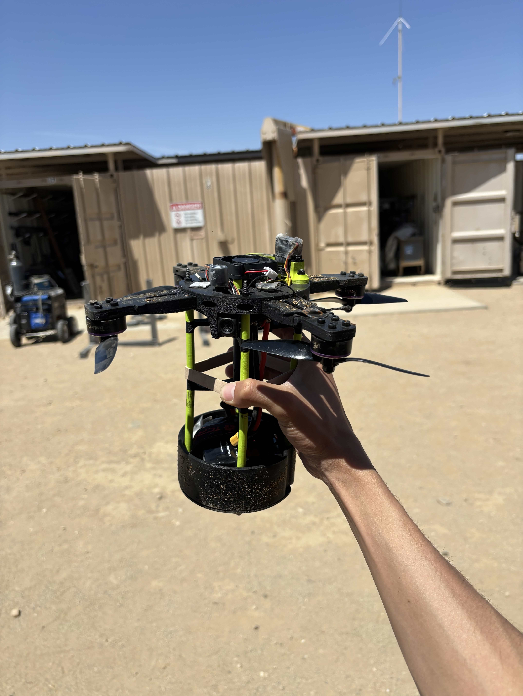
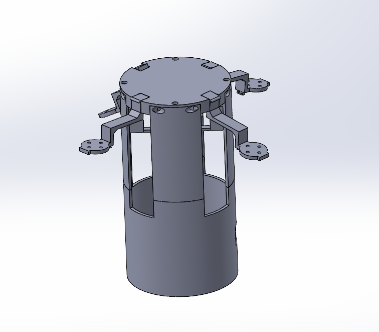

PROJECT 02
Drone Rocket Payload
Objectives
Design and develop a drone payload that integrates into a rocket for the FAR unlimited collegiate rocketry competition. Payload must deploy below 400ft altitude and return back to launch site for maximum points. Consider functionality, integration, reliability, and budget while desgining and building payload.
Outcomes & Contributions
I worked with a small team to research different drone designs and created a CAD structural prototype. I developed the folding airbrakes that would allow the drone to control its flight while still fitting in the rocket. I helped refine the prototype to withstand launchday conditions, and helped write testing procedures to confirm the drone met signal range and vibration resistance requirements. Points gained from our drone payload contributed to a 3rd place overall finish for the team.
Technical Details & Skills
FPV drone design, structures integration, SolidWorks, Onshape, 3D-printing, testing, documentation, communication.